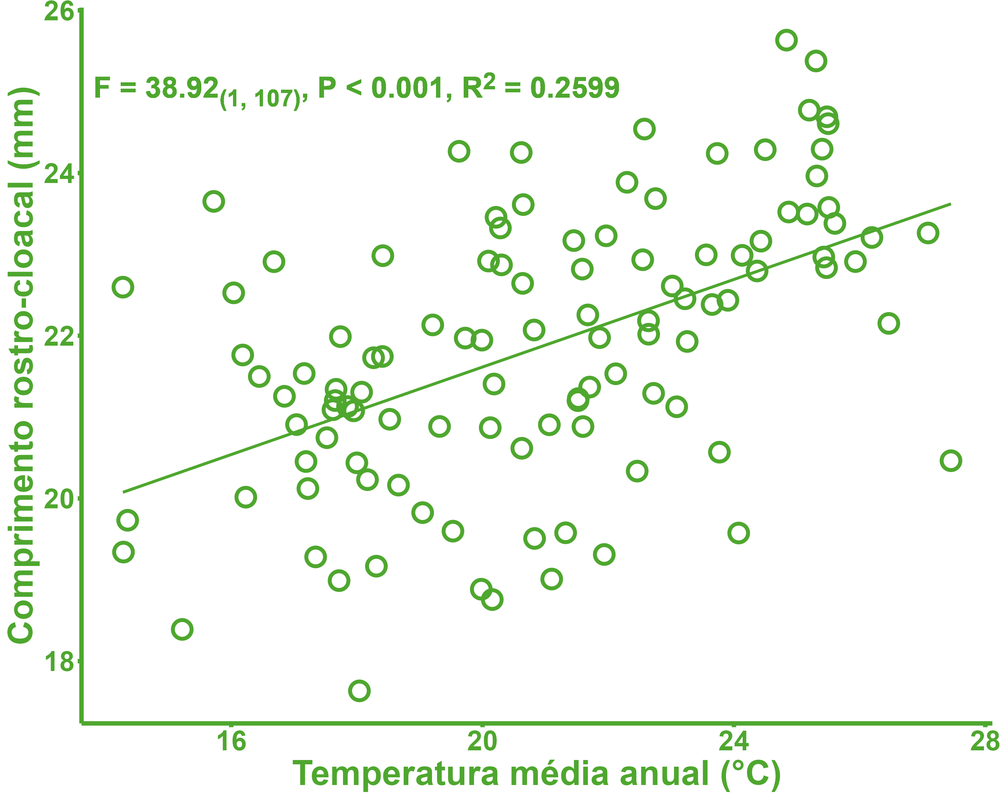
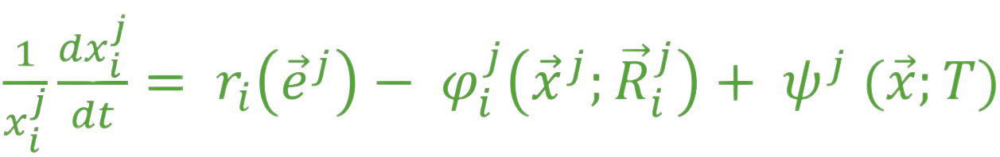
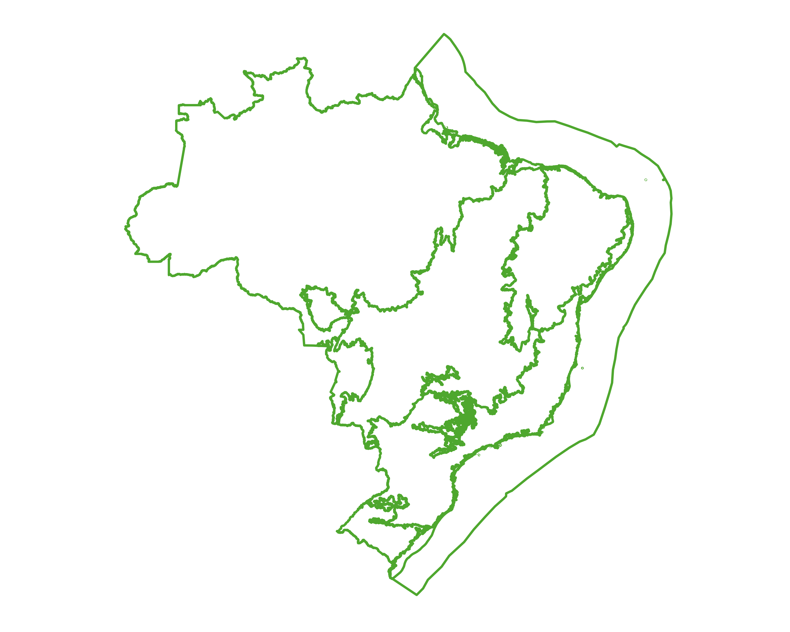
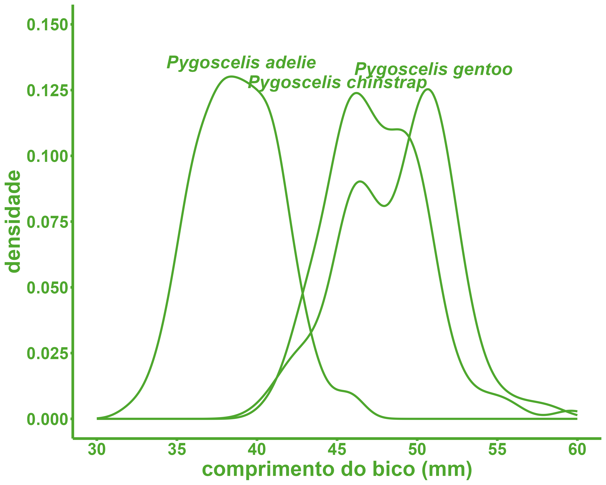
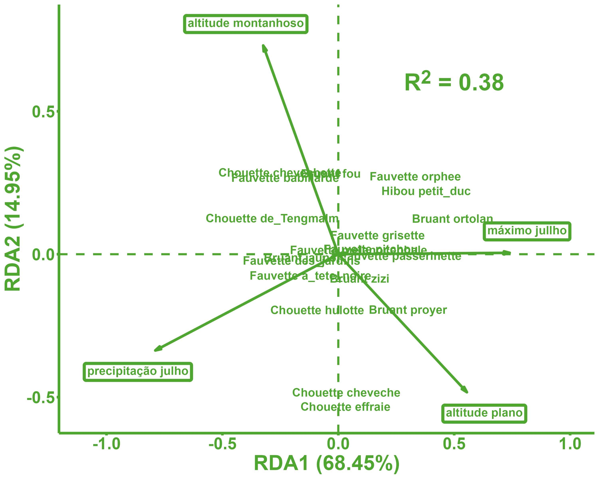

Um review sobre o que fez o R ser a principal ferramenta de analises de dados ecológicos.

Se você trabalha com ecologia, dificilmente não teve algum contato com o R, mesmo que você não o use. O R atualmente se tornou a principal ferramenta dos ecólogos e biólogos interessados em meio ambiente no quesito análise de dados. Mesmo quem não o usa acaba tendo algum tipo contato com o mesmo, nem que de forma indireta, graças a colegas e colaboradores que o usam. O R se tornou quase que onipresente ao redor do mundo nos grupos de pesquisa sobre ecologia. Mas Por que tanta popularidade para essa linguagem de proogramação, nesse contexto? O que tem o R e os estudos ecológicos que fizeram ser uma combinação tão replicada?
O R é realmente popular na ecologia?
A primeira pergunta necessária para começar essa conversa: o R é tão popular assim? Essa afirmação possui alguma forma de corroboração que seja além de experiências pessoais? A resposta mais direta: sim. E o melhor: há dados sobre isso.
Em um trabalho publicado por Lai et al. (2019), os pesquisadores observaram a frequência de citaçãoes de pacotes R em mais de 60.000 artigos, publicados em 30 revistas especializadas em ecologia, durante o período de 2007-2017. O que eles observaram foi um crescimento constante, quase que perfeito, ao longo dos anos. Medindo a correlção entre o passar dos anos e as citações, houve uma correlação muito alta (r = 0,99, p < 0,0001).

Isso nos ajuda a ter um pouco de dimensão de que, ao longo dos anos, não apenas sua popularidade na ecologia existe, mas também que apenas cresceu.
É importante ter em mente que esses dados podem sofrer de uma subrepresentatividade: esse trabalho detectou apenas os pacotes citados, mas é comum que apenas os pacotes utilizados diretamente nas análises e modelagens de dados sejam citados. Por mais que muito utilizados também, pacotes voltados à tratamento, transformação, checagem de pressupostos e visualização de dados raramente são citados nos artigoos, por serem considerados desnecessários enquanto parte da descrição dos MAteriais e Métodos. Não é difícil que a popularidade do uso do R seja maior do que a que Lai et al. (2019) observaram.
O que faz ser tão popular?
Modelagem estatística

A ecologia é uma das ciências da vida com um dos mais fortes usos de estatística para responder suas perguntas de pesquisa. É até considerado uma “desilusão” o que muitos passam ao iniciar na ecologia, de perceber que boa parte do seu trablho será mais modelando dados do que em fazer coletas de campo. Como o intuíto da própria criação do R está em ser uma linguagem de programação voltada e acessível a cientistas, principalmente os que usam estatística como ferramenta de pesquisa, O R é quase que a linguagem de programação perfeita para a ecologia.
O R apresenta diversas ferramentas flexíveis e muito úteis nesses estudos, como o próprio pacote nativo stats, que possui muitas das principais funções estatísticas utilizadas em diversas pesquisas ecológicas, como estaística descritiva e os testes de hipótese, além de outros pacotes relacionados, como o pacote vegan, que traz análises sobre métricas de ecologia de comunidades e oferece análises estatísticas multidimensionais, como nMDS, RDA e PERMANOVA, betareg, que permite a criação de modelos de GLM (Generalized Linear Models - Modelos Lineares Generalizados) com distribuição beta dos resíduos, gamm4, para a criação de GAMs (Generalized Additive Models - Modelos Aditivos Generalizados), e o pacote performance, para diversos tipos de avaliações de modelo.
Devido essa grande variedade de ferramentas de modelagem estatística, é possível utilizar diversas análises juntas, em um mesmo ambiente de desenvolvimento, assim como reutilizar dados destas para análises posteriores, sem depender de vários softwares.
Modelagem ecológicas

Toda ciência tem suas análises exclusivas, e a ecologia não é excessão. Além do já citado pacote vegan, muito utilizado para análises de diversidade biológica de comunidades, há também outros pacotes, como o pacote FD, para análises de diversidade funcional, o pacote ade4, também utilizado para estudos sobre ecologia e evolução. Para citar pacotes brasileiros, há o pacote ecodados, que é um pacote que reúne diversas bases de dados, com fins de ensino em ecologia.
Além destes, há um conjunto de pacotes voltados aos SDM (Species Dsitribution Models - Modelos de Dsitribuição de Espécies), como os pacotes sdm, usdm e dismo.
Um aspecto interessante sobre como o R funciona que facilita as análises de fins ecológicos é que, pelo R ser uma linguagem de código aberto, o que significa que qualquer um pode contribuir com a criação de novos pacotes e ferramentas, aliado à grande velocidade com o qual novos métodos sobre medição de processos ecológicos são desenvolvidos, faz com que o R Seja um ambiente ideal para o uso de ferramentas de análises de dados ecológicos, pois sua atualização é constante e mais rápidas que softwares de código fechado.
Análises geoespaciais

Uma boa parte de estudos ecológicos se dá em análises e tratamentos de dados geoespaciais. Nos últimos anos, o R tem desempenhado um papel importante dentro das linguagens de programção voltadas para as ciências de dados na parte de análises e modelagens geoespaciais.
Dentro do R, há um conjunto de pacotes muito úteis para diversos desses fins. Exemplos são os pacotes sf e sp, muito úteis para análises e tratamentos de shapefiles (.shp, .kml e .kmz), os pacotes raster, geodata e terra, bastante versáteis em análises de rasters (.tif e .tiff), e o há pouco tempo lançado tidyterra, implementando ótimas ferramentas para a visualização de dados geoespaciais.
Controle de dados e reprodutibilidade

Uma das principais características de uma ciência considerada boa e de qualidade é um alto grau de reprodutibilidade: a capacidade de outros pesquisadores repetirem as mesmas investições e chegarem em resultados muito semelhantes. Parte dessa boa prática vem de um controle na fase de análise e modelagem dos dados.
Aliado aos tópicos explicados anteriormentes, por ser uma linguagem de programação, o R permite não apenas comparar práticas, assim como também revisar as etapas das análises dos dados, já que estas estão salvas e registradas nos scripts. Além disso, o R atualmente apresenta um conjunto ferramentas muito úteis para o tratamento e processamento de dados, principalmente nos pacotes que fazem parte do grupo tidyverse, dando maior mobilidade para as análises, mesmo as que utilizam bancos de dados com estruturações não tão vantajosas.
É importante ter em mente que não basta apenas ter um script que registrou o que você fez. O script também precisa estar disponível para outros pesquisadores, como nos materiais suplementares dos artigos. Um trabalho feito por Culina et al. (2020), avaliando 346 artigos aleatórios de ecologia, entre 2015-2019, observou que apenas 27% dos artigos disponibilizavam os códigos, sendo que 79% dos mesmos artigos disponibilizavam seus dados, mesmo que a política de incentivo ao compartilhamento de código pelas revistas vem crescendo ao longo dos anos.
A reprodutibilidade também está no quanto aquele script está disponível, mas o quanto ele pode ser executado por terceiros. Por isso, é recomendado aos pesquisadores que sigam boas práticas de codagem, como a documentação dos seus scripts, declarar quais pacotes e funções foram utilizadas e tornar o código linear. Ivimey et al. (2023) argumentam códigos mal estruturados podem propagar práticas nocivas dentro da ecologia.
Visualização de dados

Por mais que o que de fato seja o ouro dos artigos são os resultados, principalmente os valores de análises estatísticas, muito do que fazem os artigos mais legíveis, assim como seus resultados, são os gráficos e tabelas. No caso da ecologia, mapas também.
Atualmente, o R é a linguagem de programação mais avançada no que se refere À criação de gráficos, tabelas e mapas. Grande parte disso é devido ao pacote ggplot2, um dos pacotes do grupo tidyverse, que permite a criação de gráficos e mapas com uma variedade muito grande de formas e cores. Aliado ao pacote, existem outros pacotes que servem como extenções deste, como o já citado tidyterra, para a criação de mapas, e o pacote ggtext, para textos como caracteres complexos. Além de gráficos e mapas, há pacotes para a criação de tabelas, como os pacotes flextable e gt. Para dados complexos, assim como diversas informações sobre análises e modelos estatísticos feitos, muito comuns na ecologia, o R se torna uma ferramenta insdispensável.
Qual o futuro podemos esperar?
Existe uma linha tênue na futurologia entre análises sérias sobre tendências do futuro e brincar de advinho. Se o R continuar na sua tendência de crescimento e aprimoramento nas ferramentas de ciências de dados, este continuará sendo uma ferramenta presente nas pesquisas ecológicas. Possívelmente, mais presente do que já é.
Por mais que muitos pesquisadores, principalmente os mais velhos, relutem no uso do R como suas ferramentas de dados nos estudos ecológicos, pelos seus mais diversos motivos, a tendência é que cada vez mais o R ganhe mais espaço dentro da ecologia, principalmente pelos pesquisadores mais novos e os que ainda estão em formação, podendo até substituir, em algum momento e para algumas linhas de pesquisas, os softwares point and click. A tendência é de ecológos e biólogos ligados à ecologia se tornem cada vez mais programadores também, como parte de sua formação profissional.